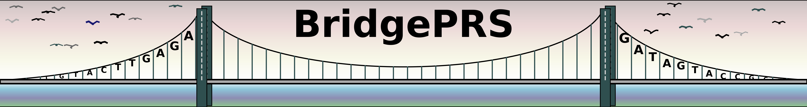
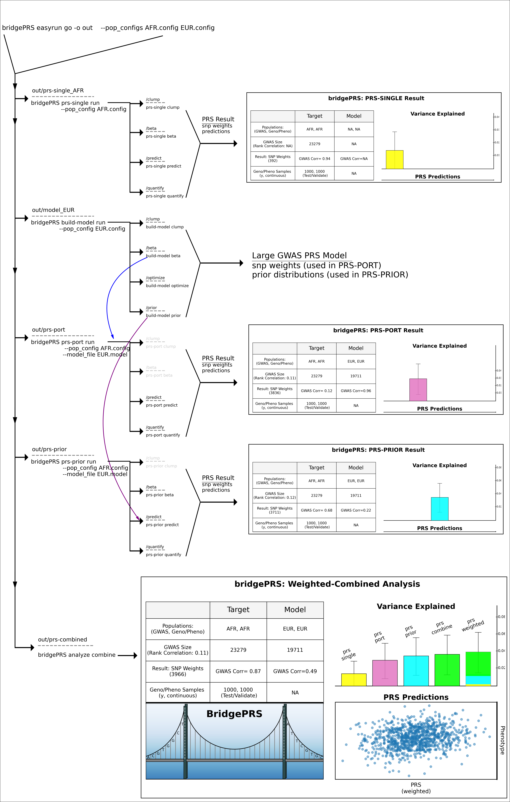

Subprograms
BridgePRS consists of five related multi-function subprograms: 78
1) BridgePRS prs-single
2) BridgePRS build-model
3) BridgePRS prs-port
4) BridgePRS prs-prior
5) BridgePRS analyze combine
| Subprogram | Input | Subcommands | Output |
|---|---|---|---|
| prs-single | Target Pop Data | run,clump,beta,predict,quantify | prs-result |
| build-model | Model Pop Data | **run**clump,beta,predict,prior | model-params |
| prs-port | Target Pop + Model Result | run,predict,quantify | prs-port-result |
| prs-prior | Target Pop Data + Model Result | run,clump,beta,test,predict | prs-prior-result |
| analyze | PRS Result Files | **run**result,combine | single-plot,weighted prs-result,weighted prs plot |
These programs can be called consecutively using the easyrun master-program which will create the following directory structure:
prs-single
The subprogram (prs-single) and subcommand (run) (./bridgePRS prs-single run) requires that the
following target population data be provided on the command line or inside of a configuration file:
- --pop: The name of your target population
- --ldpop: The ld reference name, if different from target population name
- --sumstats_prefix: Sumstats data
- --genotype_prefix: Target Genotype Data
- --phenotype_file: Target Phenotype File
This subprogram performs single population RidgePRS.
build-model
The subprogram is run on the base population (where the GWAS is larger).
- --pop: The name of your target population
- --ldpop: The ld reference name, if different from target population name
- --sumstats_prefix: Base sumstats data
- --genotype_prefix: Base Genotype Data (If available)
- --phenotype_file: Base Phenotype File (If available)
This program performs RidgePRS on the base population and then provides a prior distribution for each SNP weight that can be passed onto the next programs.
prs-port
The subprogram uses the model result and the target population data to "port" the SNP weights from the base population to make estimates in the target population.
prs-prior
The subprogram uses the model result and the target population data and uses the the SNP weights from the base population to estimate a prior distribution to make estimates in the target population.
analyze
The analyze subprogram is used to either make a plot from a single result (above) or to combine the results of all three.
